第 1 章 引论
1.
sum=(10+20)*(num+square); 的词法分析
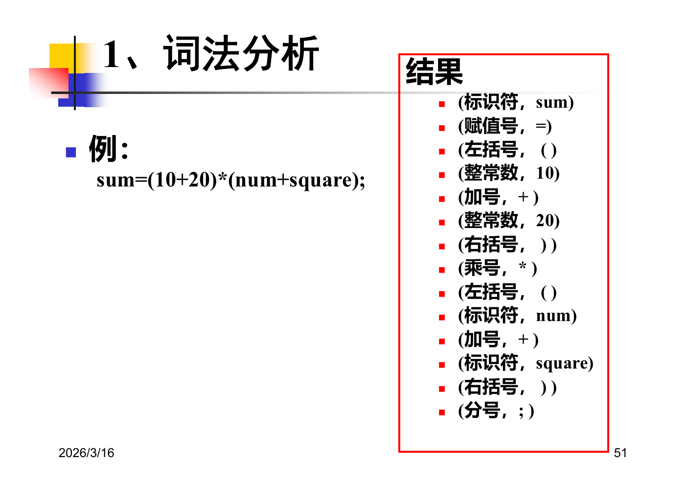
答案：
(标识符, sum)
(赋值号, =)
(左括号, ()
(整常数, 10)
(加号, +)
(整常数, 20)
(右括号, ))
(乘号, *)
(左括号, ()
(标识符, num)
(加号, +)
(标识符, square)
(右括号, ))
(分号, ;)
解析：词法分析只负责把字符流切成单词符号，不负责判断表达式优先级。标识符的属性值通常是名字本身或符号表入口，常数的属性值是数值。
2.
sum=(10+20)*(num+square); 的中间表示
一种三地址码/四元式思路：
t1 := 10 + 20
t2 := num + square
t3 := t1 * t2
sum := t3
后缀式：
sum 10 20 + num square + * =
前缀式：
= sum * + 10 20 + num square
四元式：
(+, 10, 20, t1)
(+, num, square, t2)
(*, t1, t2, t3)
(=, t3, -, sum)
解析：中间代码要显式表达计算顺序。括号决定先算 10+20 和
num+square，再乘，最后赋值。
3.
机器语言、汇编语言、高级语言对照
答案要点：
- 机器语言：机器可直接执行，二进制编码，可读性差。
- 汇编语言：用助记符表示机器指令，仍然依赖具体机器。
- 高级语言：接近问题描述，需经编译或解释才能执行。
解析：这一题通常考“为什么需要编译器”。高级语言提高表达能力，编译器负责把它翻译成目标机能执行的低级代码。
4. T 形图、自展、移植
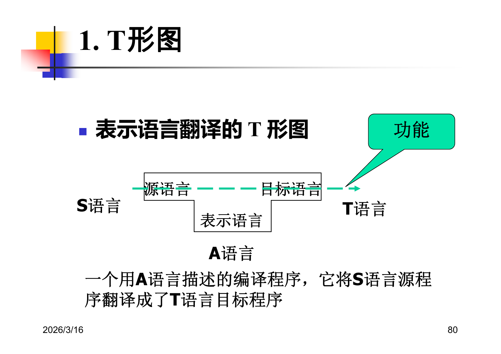
答案要点：
- T
形图上方左边是源语言，右边是目标语言，下方是实现该编译器所用语言。
- 自展：先实现一个小语言子集编译器，再用它编译更完整的编译器。
- 移植：已有 A 机上的编译环境时，用高级语言写 B 机目标编译器，再在 A
机上交叉编译出可在 B 机运行的编译器。
解析：T
图题核心是分清“编译器运行在哪台机器上”“输入语言是什么”“输出目标语言是什么”。
5.
解释程序、编译程序等概念辨析
答案：
| 名称 |
源程序 |
目标/结果 |
特点 |
| 解释程序 |
高级语言 |
直接执行结果 |
边解释边执行 |
| 编译程序 |
高级语言 |
汇编/机器目标程序 |
先整体翻译再执行 |
| 汇编程序 |
汇编语言 |
机器语言 |
助记符到机器码 |
| 交叉编译程序 |
高级语言 |
另一台机器的目标代码 |
编译器运行机与目标机不同 |
| 反编译程序 |
低级代码 |
较高级表示 |
机器/字节码反向恢复 |
解析：考试常见问法是“源语言和目标语言分别是什么”。
第 2 章 高级语言及其文法
1. 字母表乘积与幂
答案：
Σ1={0,1}, Σ2={a,b}
Σ1Σ2={0a,0b,1a,1b}
{0,1}^3={000,001,010,011,100,101,110,111}
解析：字母表乘积是从前一个集合取一个字符、后一个集合取一个字符并置。Σ^n
是长度为 n 的所有串。
2. 正闭包与 Kleene 闭包
答案：
{0,1}+ = 所有长度 >= 1 的二进制串
{0,1}* = 所有长度 >= 0 的二进制串 = {ε} ∪ {0,1}+
解析：+ 不含空串，* 含空串。
3. 例 2.9：赋值语句文法
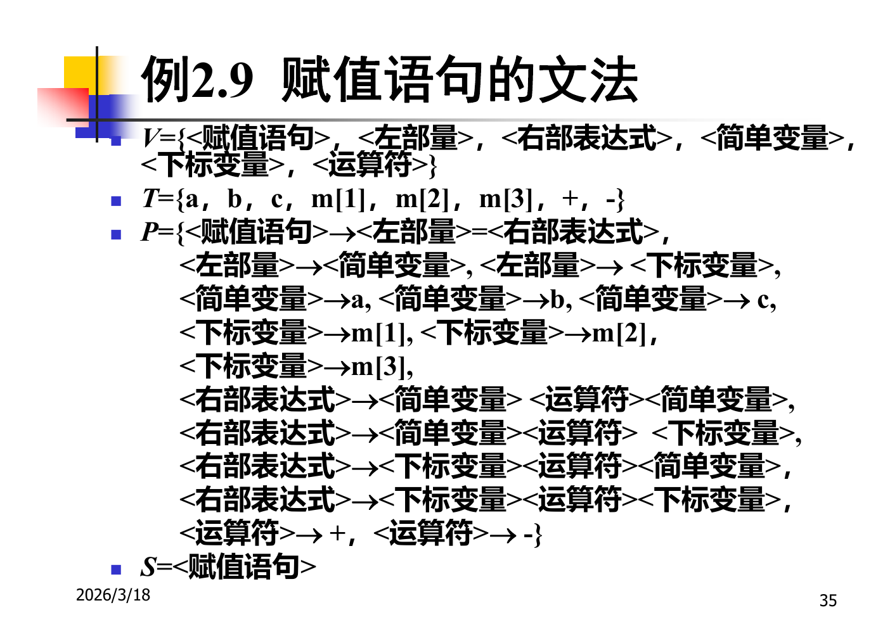
答案：
G = (V, T, P, S)
V = {A, B, E, C, D, O}
T = {a, b, c, m[1], m[2], m[3], +, -, =}
S = A
P:
A → B = E
B → C | D
C → a | b | c
D → m[1] | m[2] | m[3]
E → C O C | C O D | D O C | D O D
O → + | -
解析：A 表示赋值语句，B
表示左部量，E 表示右部表达式，C/D/O
分别表示简单变量、下标变量、运算符。
4. 证明 a=b+m[1]
是文法 G1 的句子
答案：
A ⇒ B=E
⇒ C=E
⇒ a=E
⇒ a=C O D
⇒ a=b O D
⇒ a=b + D
⇒ a=b+m[1]
解析：只要能从开始符号推出一个全由终结符组成的串，该串就是文法的句子。
5. 判断文法类型
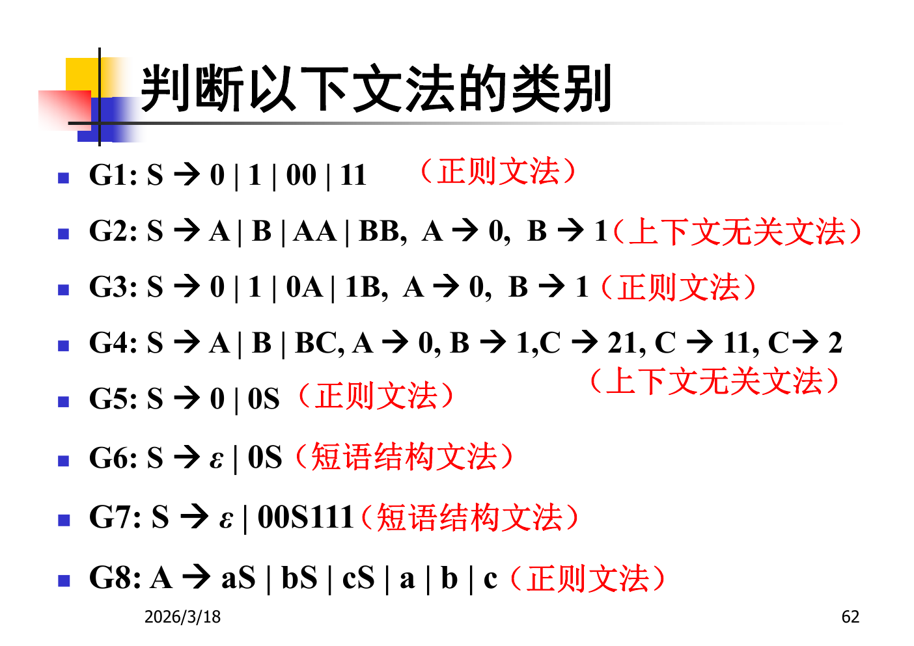
答案规则：
- 0 型：产生式基本无限制，左部至少含一个非终结符。
- 1 型：一般满足
|左部| <= |右部|，除开始符号推出空串的特殊情况。
- 2 型 CFG：每个产生式左部是单个非终结符。
- 3 型正则文法：右线性
A→aB|a 或左线性
A→Ba|a，不能混用方向。
解析：做题时从最严格的 3 型开始判断；不满足再看 2 型、1 型、0
型。
6. {0123456}
的左线性和右线性文法
答案：
右线性：
S → 0A
A → 1B
B → 2C
C → 3D
D → 4E
E → 5F
F → 6
左线性：
S → A6
A → B5
B → C4
C → D3
D → E2
E → F1
F → 0
解析：右线性从左往右“预留后续状态”；左线性从右往左构造。
7. id+id*id
的语法树、最左/最右推导
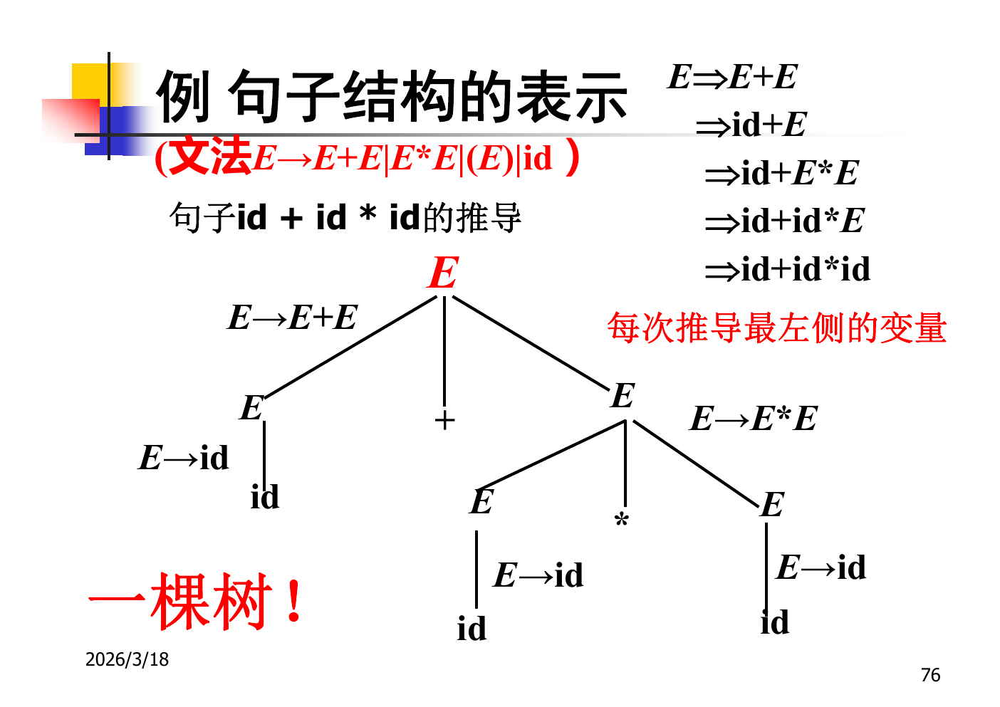
以文法 E→E+E|E*E|(E)|id 为例，一条最左推导：
E ⇒ E+E
⇒ id+E
⇒ id+E*E
⇒ id+id*E
⇒ id+id*id
一条最右推导：
E ⇒ E+E
⇒ E+E*E
⇒ E+E*id
⇒ E+id*id
⇒ id+id*id
解析：同一棵语法树可能对应不同推导顺序；但如果同一句子能有两棵不同语法树，则文法二义。
8. 短语、直接短语、句柄
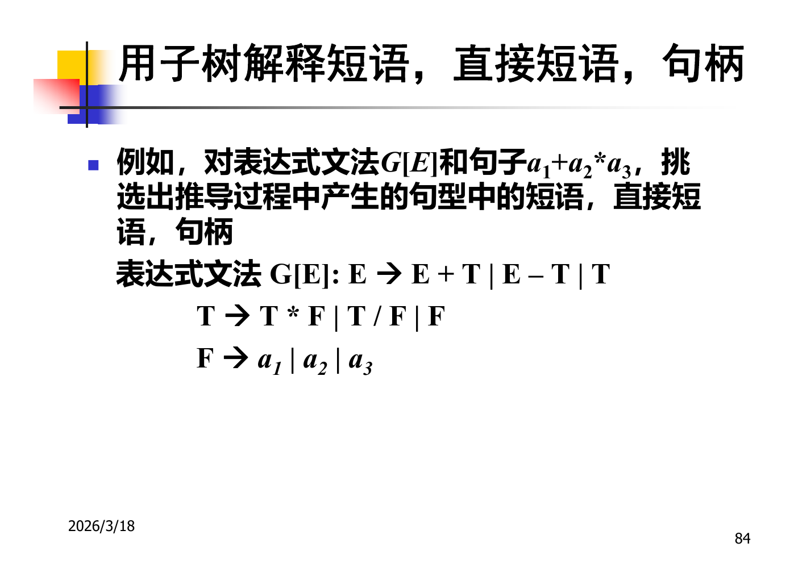
对句型 a1+a2*a3 的典型答案：
- 短语：
a1、a2、a3、a2*a3、a1+a2*a3。
- 直接短语：叶子直接由某个非终结符一步推出的部分，如
a1、a2、a3。
- 句柄：当前句型的最左直接短语。
解析：短语对应语法树中某棵子树的叶子串；直接短语对应高度为 1
的子树；句柄是自底向上分析下一步要归约的对象。
9.
二义性证明：E→E+E|E*E|(E)|id
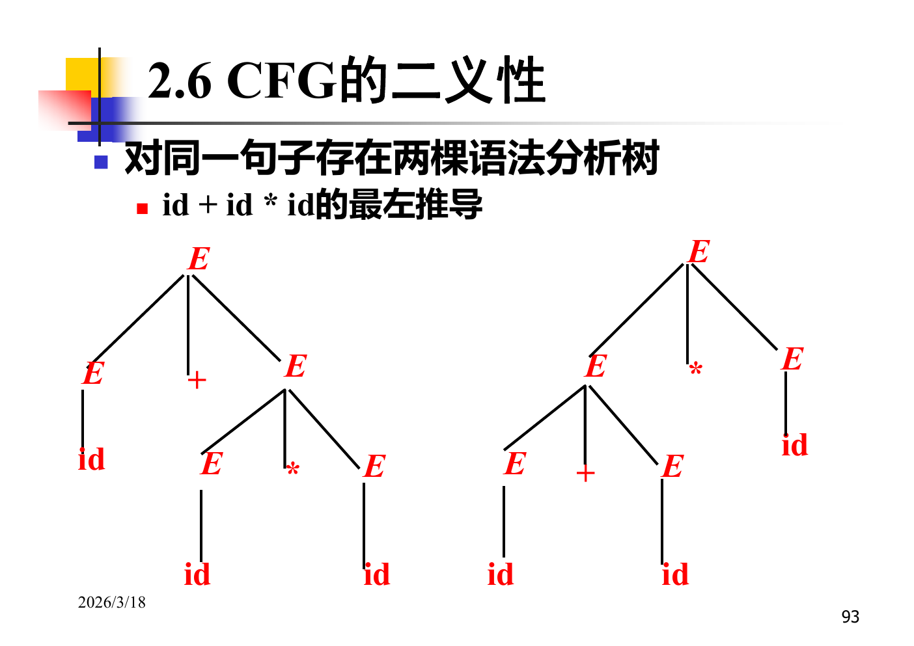
答案：句子 id+id*id 有两种结构：
id + (id * id)
(id + id) * id
对应两棵不同语法树，因此该文法二义。
解析：证明二义性不能只说“看起来有歧义”，必须给出一个具体句子，并展示两棵树或两条不同最左推导。
10. 消除表达式二义性
答案：
E → E + T | T
T → T * F | F
F → id | (E)
解析：把优先级低的 + 放在较高层
E，把优先级高的 * 放在较低层
T，使 * 更先结合。
11. 语言构造练习答案
- 以
a 开头、以 b 结尾，字母表
{a,b,c}：
S → a M b
M → aM | bM | cM | ε
- 二进制偶数：
S → B0
B → 0B | 1B | ε
若不允许多位数前导 0，可另设
S→0|1C0，C→0C|1C|ε。
- 长度至少 2 的十进制数字串：
S → D D T
T → D T | ε
D → 0|1|2|3|4|5|6|7|8|9
- 不包含
00 的二进制串：
S → 1S | 0A | ε
A → 1S | ε
a^n b^n：
S → a S b | ε // n>=0
S → a S b | ab // n>=1
a^n b^n c^m：
S → T C
T → a T b | ε
C → c C | ε
- 括号匹配：
S → (S)S | ε
{a,b} 上回文串：
S → aSa | bSb | a | b | ε
解析：格式题靠“前缀/中间/后缀”，数量配对和嵌套题靠递归。
第 3 章 词法分析
1. 例
3.1：if count>7 then result := 3.14;
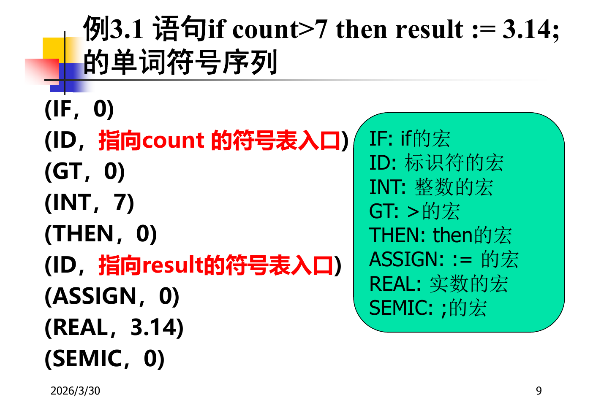
答案：
(IF, -)
(ID, count 的符号表入口)
(RELOP, >)
(NUM, 7)
(THEN, -)
(ID, result 的符号表入口)
(ASSIGN, :=)
(REAL, 3.14)
(SEMI, ;)
解析：关键字一般一符一类；标识符属性值指向符号表；常数属性值保存转换后的数值。
2. 标识符文法与正则式
答案：
id → letter rest
rest → letter rest | digit rest | ε
letter → A|...|Z|a|...|z
digit → 0|1|...|9
正则式：
letter(letter|digit)*
解析：标识符必须以字母开头，后续可以是字母或数字。
3. 正则文法转正则表达式
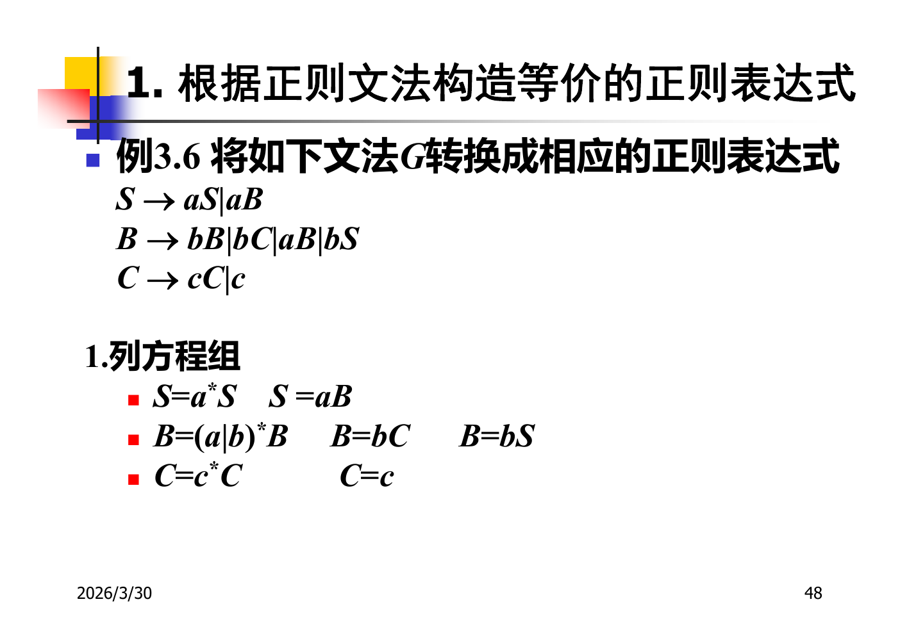
方法答案：为每个非终结符列一个语言方程，用 Arden 引理消元。
解析示例：
S = aS ∪ aB
可化为 S = a* aB = a+ B
后续继续把 B、C
方程代入并化简。考试中写清“列方程 -> 消元 ->
得正则式”即可拿步骤分。
4. 正则式 a(a|b)*
转右线性文法
答案：
S → aA
A → aA | bA | ε
解析：S→aA 保证首字符为 a，A
递归生成任意多个 a/b。
5. 奇偶 DFA：0 和 1
的个数都是偶数
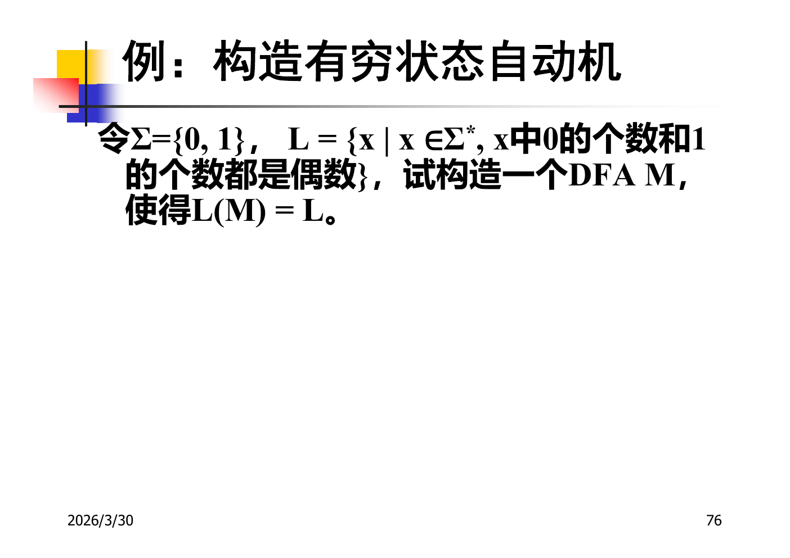
答案：设状态表示 (0 的奇偶, 1 的奇偶)：
q00 = 偶0偶1 // 初态、终态
q01 = 偶0奇1
q10 = 奇0偶1
q11 = 奇0奇1
转移表：
| 状态 |
读 0 |
读 1 |
| q00 |
q10 |
q01 |
| q10 |
q00 |
q11 |
| q01 |
q11 |
q00 |
| q11 |
q01 |
q10 |
解析：读到 0 翻转 0 的奇偶性，读到 1 翻转 1
的奇偶性。
6. 正则式
ε|(0|1)01*|0+ 的状态转换图
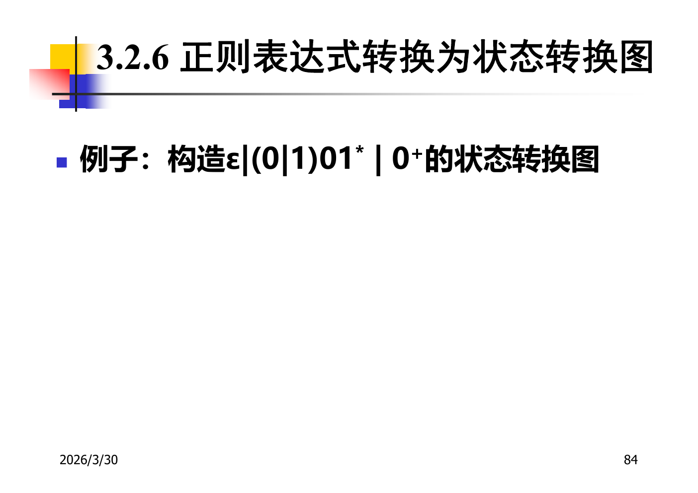
答案要点：
ε：开始状态可通过空边到终态，或开始状态本身为终态。(0|1)01*：先读 0 或 1，再读
0，再读任意多个 1。0+：至少一个 0，后续任意多个
0。
解析：整体是并集，用一个新开始状态通过 ε
边连接三个子图，再汇到终态。
7. 不同进制无符号整数识别
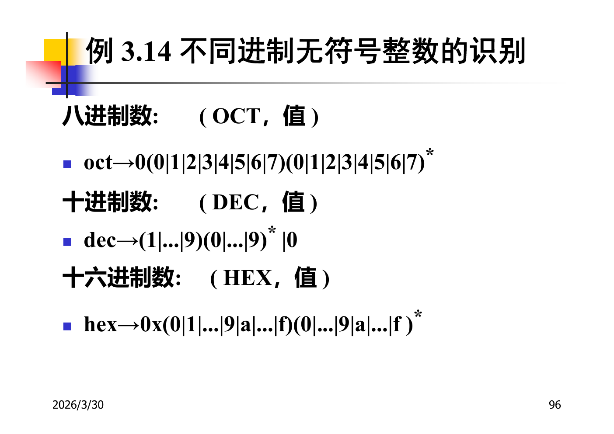
答案要点：
- 十进制：非零数字开头后接数字，或单独
0。
- 八进制：通常以
0 开头，后接 0..7。
- 十六进制：通常以
0x/0X 开头，后接
0..9/a..f/A..F。
解析：状态图区分“读到前缀”“读到合法数字”“非法数字”。
8. 导读练习：token 序列
题：if count<=10 then count:=count+1
答案：
(if, -)
(id, count)
(relop, <=)
(num, 10)
(then, -)
(id, count)
(assign, :=)
(id, count)
(addop, +)
(num, 1)
解析：<= 必须按最长匹配作为一个关系运算符，不能拆成
< 和 =。
9. 导读练习：a(a|b)*b
的右线性文法
答案：
S → aA
A → aA | bA | b
解析：首位由 S→aA 保证；A→b 负责最后以
b 结束。
10. 导读练习：NFA 子集构造
NFA：q0 --a--> q0，q0 --a--> q1，q1 --b--> q1，初态
q0，终态 q1。
答案：
| DFA 状态 |
NFA 状态集合 |
读 a |
读 b |
终态? |
| A |
{q0} |
B |
Ø |
否 |
| B |
{q0,q1} |
B |
C |
是 |
| C |
{q1} |
Ø |
C |
是 |
| Ø |
∅ |
Ø |
Ø |
否 |
解析：DFA 的一个状态是 NFA 状态集合；集合中含 q1
即为终态。
第 4 章 自顶向下语法分析
1. S→xAy, A→**|*，输入
x**y
答案：
S ⇒ xAy ⇒ x**y
解析：选择 A→** 可成功；若先试 A→*，得到
x*y，与输入不符，需要回溯。
2. 表达式文法 FIRST 集
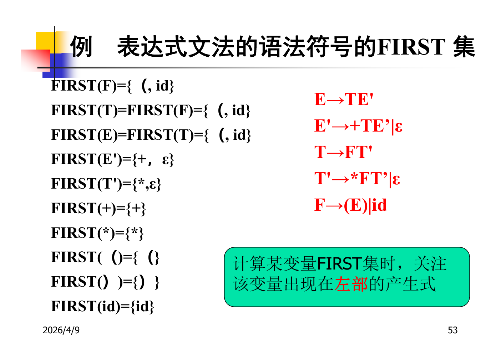
文法：
E → T E'
E' → + T E' | ε
T → F T'
T' → * F T' | ε
F → (E) | id
答案：
FIRST(F) = {(, id}
FIRST(T') = {*, ε}
FIRST(T) = {(, id}
FIRST(E') = {+, ε}
FIRST(E) = {(, id}
解析：E 的首符号来自 T，T
的首符号来自 F。
3. 表达式文法 FOLLOW 集
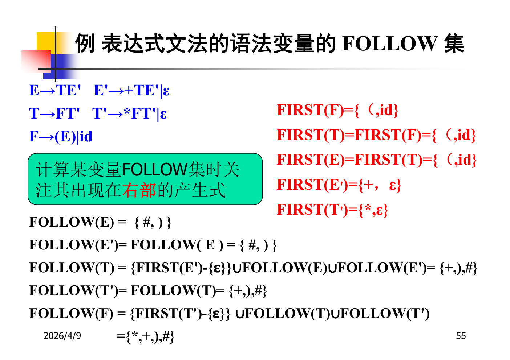
答案：
FOLLOW(E) = {), #}
FOLLOW(E') = {), #}
FOLLOW(T) = {+, ), #}
FOLLOW(T') = {+, ), #}
FOLLOW(F) = {*, +, ), #}
解析：开始符号含 #；F 后可能接
T' 的 *，若 T'⇒ε，还继承
FOLLOW(T)。
4. 非 LL(1)：S→cAd, A→ab|a
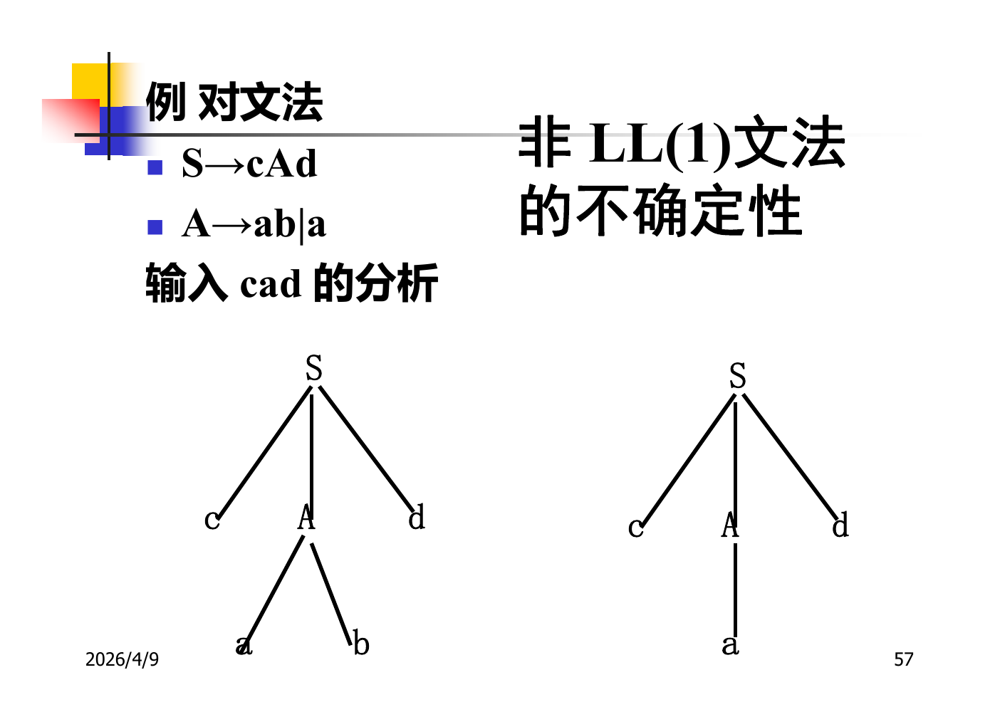
答案：
FIRST(ab) = {a}
FIRST(a) = {a}
同一非终结符 A 的两个候选式 FIRST 集相交，所以不是
LL(1)。
改写：
S → c A d
A → a A'
A' → b | ε
解析：原文法需要看到第二个符号才能决定 A→ab 还是
A→a，违反 1 个向前看符号的要求。
5. 消除表达式文法左递归
答案：
E → T E'
E' → + T E' | ε
T → F T'
T' → * F T' | ε
F → (E) | id
解析：形如 A→Aα|β 改写为
A→βA'，A'→αA'|ε。
6. FIRST/FOLLOW/SELECT 小练习
文法：S→aA|b，A→c|ε。
答案：
FIRST(S) = {a,b}
FIRST(A) = {c,ε}
FOLLOW(S) = {#}
FOLLOW(A) = {#}
SELECT(S→aA) = {a}
SELECT(S→b) = {b}
SELECT(A→c) = {c}
SELECT(A→ε) = {#}
解析：同左部候选式 SELECT 集不相交，因此该文法是 LL(1)。
7. 预测分析表构造
答案方法：
对每个产生式 A→α：
- 对每个
a∈FIRST(α)-{ε}，填
M[A,a]=A→α。
- 若
ε∈FIRST(α)，对每个 b∈FOLLOW(A)，填
M[A,b]=A→α。
- 空表项为 error。
解析：LL(1) 表项不能冲突；冲突说明不是 LL(1) 或文法需改写。
8. 递归下降子程序
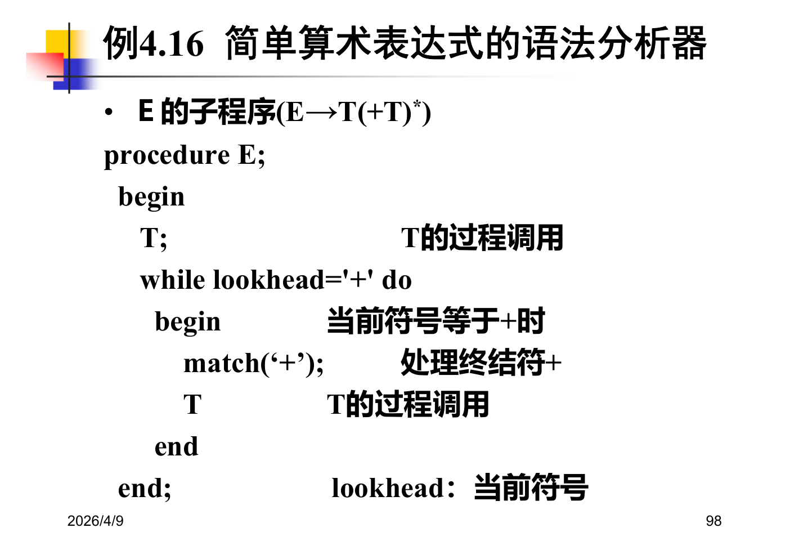
以 E'→+TE'|ε 为例：
procedure Eprime:
if lookahead == '+':
match('+')
T()
Eprime()
else if lookahead in FOLLOW(Eprime):
return
else:
error()
解析：每个非终结符一个过程；终结符用 match
匹配；ε 分支通常由 FOLLOW 集触发。
第 5 章 自底向上语法分析
1. 例 5.1：归约 abbcde
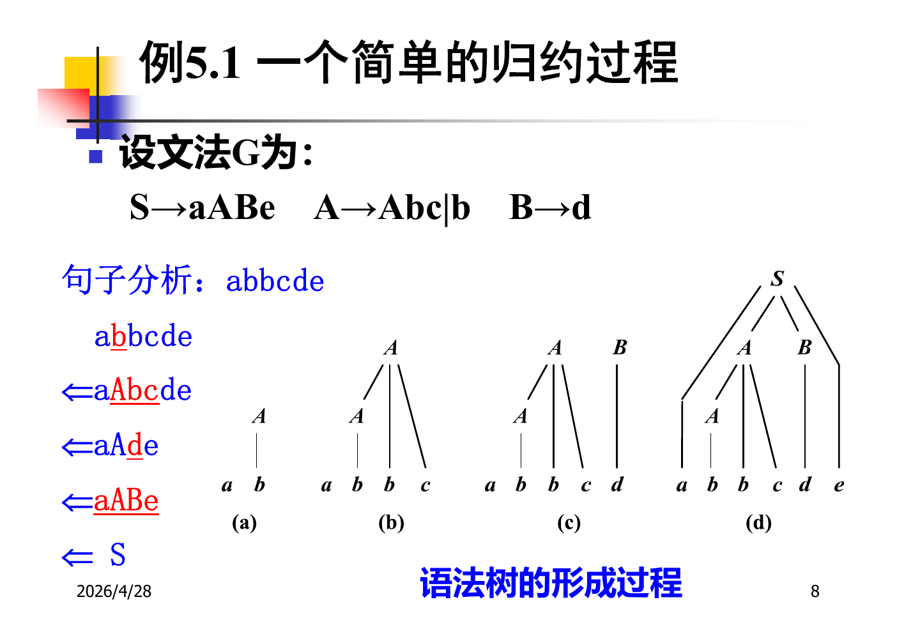
文法：S→aABe，A→Abc|b，B→d。
答案：
abbcde
⇒ 归约 b 为 A: aAbcde
⇒ 归约 Abc 为 A: aAde
⇒ 归约 d 为 B: aABe
⇒ 归约 aABe 为 S: S
解析：自底向上分析不断找句柄并归约，最终得到开始符号。
2. 算符优先关系
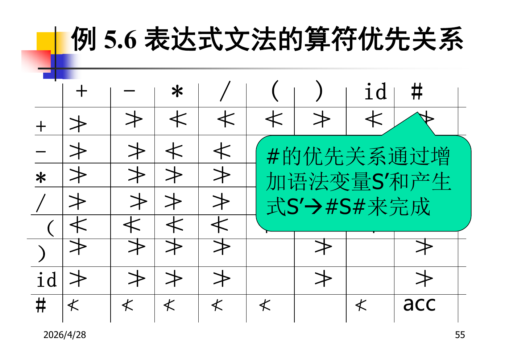
答案方法：
- 若产生式右部出现相邻终结符
ab，则
a =· b。
- 若出现
aB，则对 b∈FIRSTOP(B)，有
a <· b。
- 若出现
Ba，则对 b∈LASTOP(B)，有
b >· a。
解析：算符优先表用于判断何时移进、何时归约。
3. 例 5.7：算符优先分析
id+id
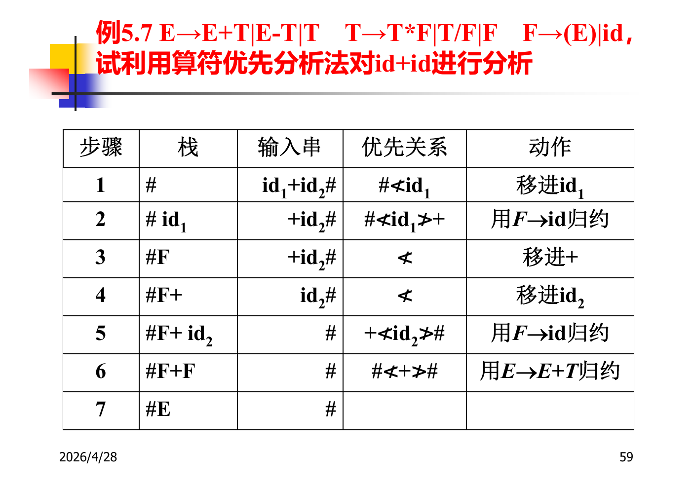
核心过程：
# id + id #
移进 id，归约为 F/T/E
看到 +，移进 +
移进 id，归约为 F/T/E
按 E+T 或 E+E 的结构归约
最终 # E # 接受
解析：实际填写时用“步骤、栈、输入串、优先关系、动作”五列。
4. 素短语：T+T*F+id
答案要点：
- 短语可包括
T、T*F、id、T+T*F
等，依赖完整语法树。
- 素短语是不再含更小短语的短语。
- 最左素短语是算符优先分析下一步归约对象。
解析：算符优先分析不是找普通句柄，而是利用终结符优先关系找最左素短语。
5. LR(0) 项目集与
DFA：S'→S, S→BB, B→aB|b
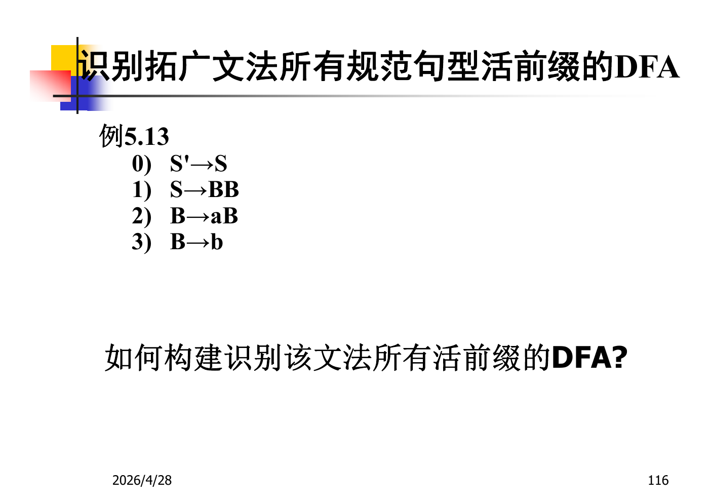
答案项目集：
I0:
S'→.S
S →.BB
B →.aB
B →.b
I1:
S'→S.
I2:
S →B.B
B →.aB
B →.b
I3:
B →a.B
B →.aB
B →.b
I4:
B →b.
I5:
S →BB.
I6:
B →aB.
解析：CLOSURE
遇到圆点后是非终结符就加入该非终结符的所有产生式；GOTO(I,X)
表示圆点越过 X。
6. LR(0) 分析表
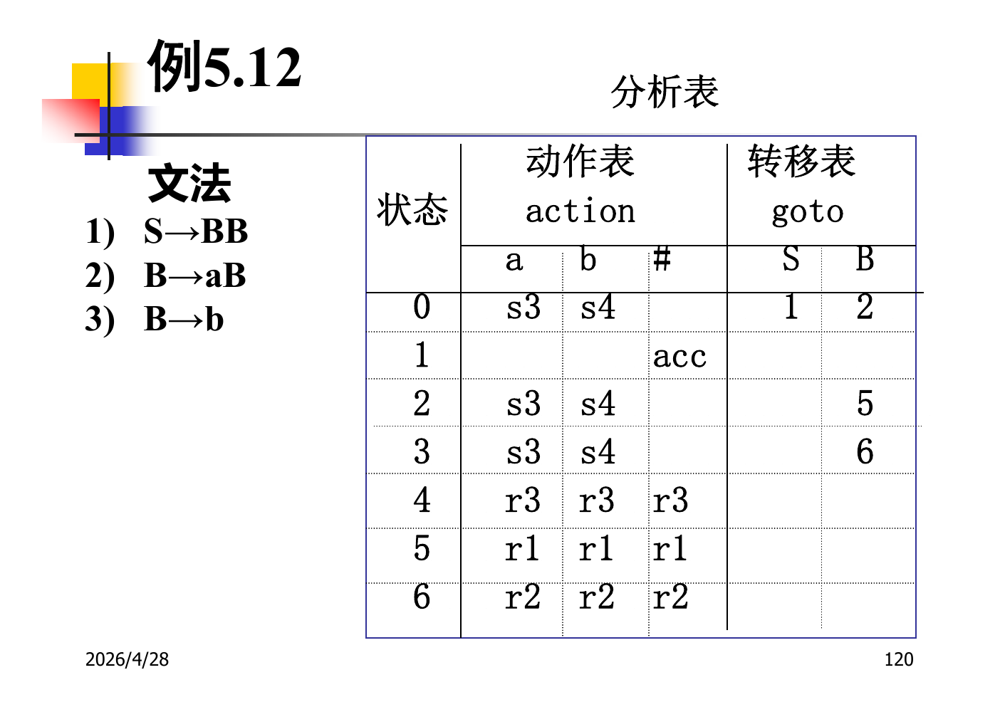
答案：
| 状态 |
a |
b |
# |
S |
B |
| 0 |
s3 |
s4 |
|
1 |
2 |
| 1 |
|
|
acc |
|
|
| 2 |
s3 |
s4 |
|
|
5 |
| 3 |
s3 |
s4 |
|
|
6 |
| 4 |
r3 |
r3 |
r3 |
|
|
| 5 |
r1 |
r1 |
r1 |
|
|
| 6 |
r2 |
r2 |
r2 |
|
|
产生式编号：
1) S→BB
2) B→aB
3) B→b
解析：LR(0) 归约项目对所有终结符和 #
都填归约动作，因此容易冲突。
7. SLR 修正
答案规则：若状态含归约项目 A→α.，SLR 不在所有终结符上填
r，只在 FOLLOW(A) 上填归约。
解析：SLR 利用 FOLLOW 限制归约发生的输入符号，能消除一部分 LR(0)
冲突。
8. LR 冲突判断
答案：
- 项目集中同时有移进项目和归约项目：移进-归约冲突。
- 项目集中有两个或更多归约项目：归约-归约冲突。
- 没有上述冲突：LR(0) 相容状态。
解析：表项中同一个位置要填两个动作，就产生冲突。
第 6 章
语法制导翻译与属性文法
1. 台式计算器 SDD
答案示例：
L → E n { print(E.val) }
E → E1 + T { E.val = E1.val + T.val }
E → T { E.val = T.val }
T → T1 * F { T.val = T1.val * F.val }
T → F { T.val = F.val }
F → digit { F.val = digit.lexval }
解析：这里只用综合属性，属性值自底向上传递，所以是 S-属性定义。
2. 依赖图
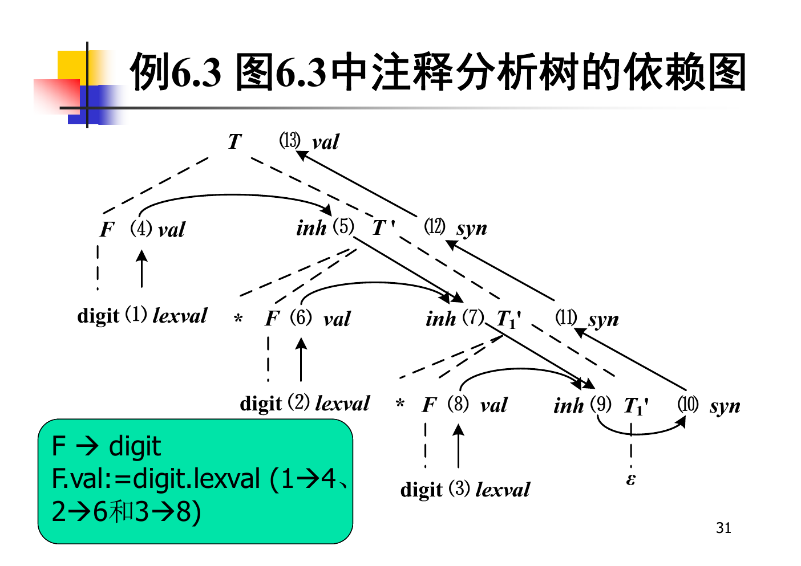
答案方法：
- 为每个属性实例建一个结点。
- 若
b=f(c1,...,ck)，则从每个 ci 向
b 画边。
- 对依赖图做拓扑排序，得到属性求值顺序。
解析：有环说明属性定义不能按普通依赖顺序求值。
3. AST 构造：3*x/y
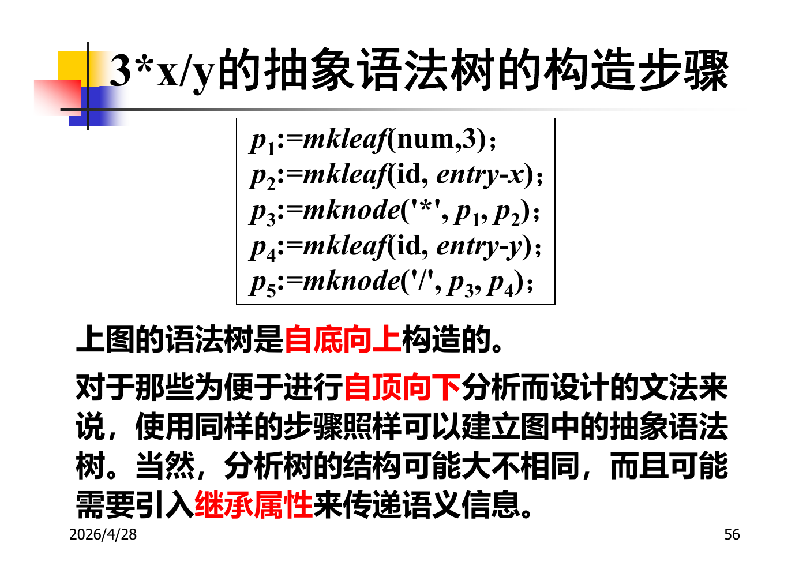
答案：
/
/ \
* y
/ \
3 x
若用函数：
n1 = mkleaf(num, 3)
n2 = mkleaf(id, x)
n3 = mknode('*', n1, n2)
n4 = mkleaf(id, y)
n5 = mknode('/', n3, n4)
解析：* 和 / 左结合，所以
3*x/y 等价于 (3*x)/y。
4. 中缀转后缀翻译模式
答案示例：
E → T R
R → + T { print('+') } R | - T { print('-') } R | ε
T → F S
S → * F { print('*') } S | / F { print('/') } S | ε
F → digit { print(digit.lexeme) } | (E)
解析：运算符动作放在右操作数翻译之后，就能输出后缀式。
5. 例 6.17：3*x/y 的翻译
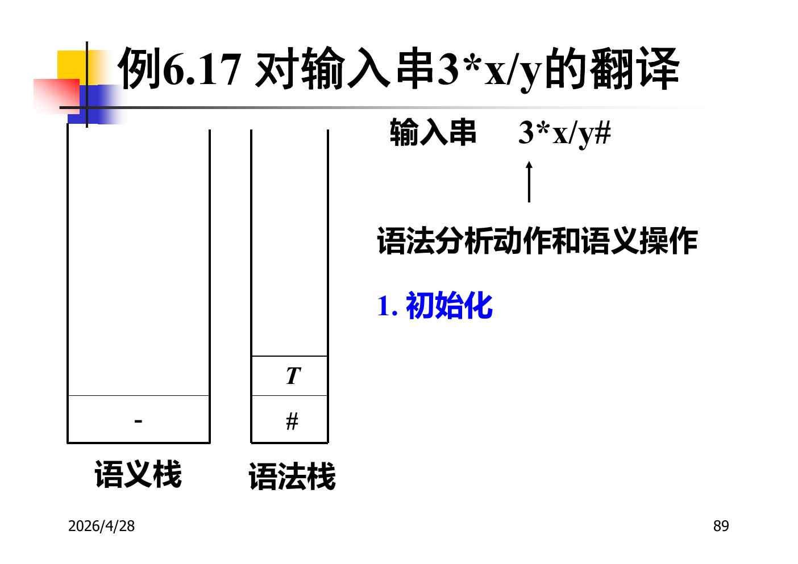
答案：后缀式为：
3 x * y /
解析：根据左结合，先输出 3 x *，再和 y
组成除法，输出 /。
6. 判断 S-属性与 L-属性
答案：
- 只含综合属性：S-属性定义。
- 对产生式
A→X1X2...Xn，Xi
的继承属性只能依赖 A 的继承属性和 X1...X(i-1)
的属性：L-属性定义。
解析：所有 S-属性定义都是 L-属性定义，但反过来不一定。
第 7 章
语义分析与中间代码生成
1. 中缀、前缀、后缀
答案：
| 中缀 |
前缀 |
后缀 |
a+b |
+ab |
ab+ |
a*(b+c) |
*a+bc |
abc+* |
(a+b)*(c+d) |
*+ab+cd |
ab+cd+* |
a:=a*b+c*d |
:=a+*ab*cd |
aab*cd*+= |
解析：后缀式的运算顺序就是运算符出现顺序。
2. a:=(-b)*(c+d)-(c+d)
的三地址码
答案：
t1 := minus b
t2 := c + d
t3 := t1 * t2
t4 := c + d
t5 := t3 - t4
a := t5
优化后可复用 c+d：
t1 := minus b
t2 := c + d
t3 := t1 * t2
t5 := t3 - t2
a := t5
解析：未优化三地址码通常直接按语法树生成；DAG
优化会合并公共子表达式。
3. a+a*(b-c)-(b-c)/d 的
DAG
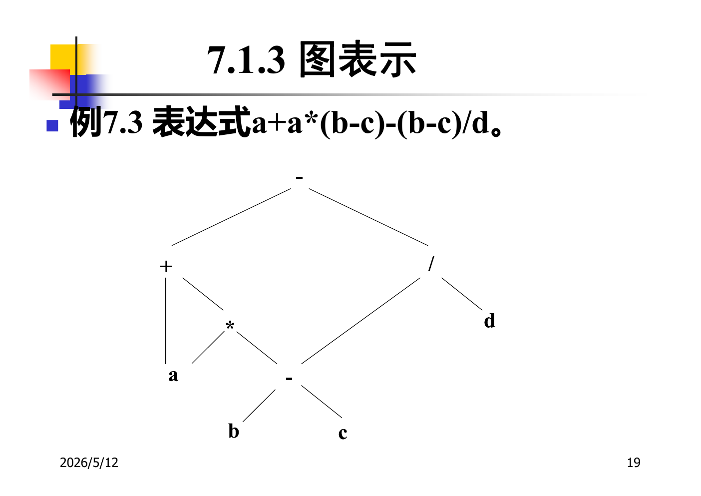
答案要点：公共子表达式是 b-c，只建一个 -
结点供乘法和除法共同使用。
解析：DAG
与普通语法树的区别是相同表达式共享结点，便于公共子表达式删除。
4. 声明语句 offset
题：int a; real b; int c;，int=4，real=8，初始
offset=0。
答案：
| 名字 |
类型 |
宽度 |
offset |
| a |
int |
4 |
0 |
| b |
real |
8 |
4 |
| c |
int |
4 |
12 |
结束后 offset=16。
解析：每登记一个名字，当前 offset 是它的相对地址，然后
offset += width。
5. 数组地址计算
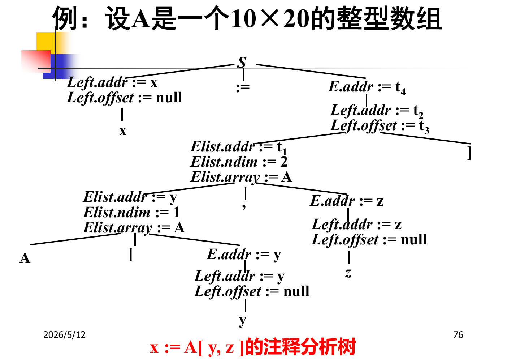
题：A[1:3,0:4]，行优先，元素宽度 4。
答案：
位移(A[i,j]) = ((i-1)*5 + (j-0))*4
A[2,3] 位移 = ((2-1)*5+3)*4 = 32
解析：第二维长度为 4-0+1=5。行优先时第一维每加
1，要跳过一整行 5 个元素。
6. 布尔表达式
a<b or c<d and e<f
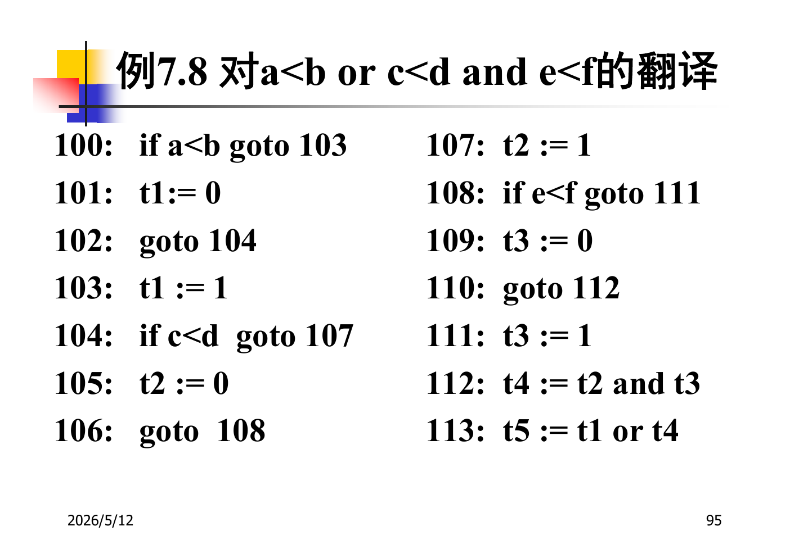
控制流翻译答案：
if a < b goto Ltrue
goto L1
L1: if c < d goto L2
goto Lfalse
L2: if e < f goto Ltrue
goto Lfalse
解析：and 优先级高于 or；or
左边真则整体真，and 左边假则整体假。
7.
if a<b then x:=1 else x:=2
答案：
if a < b goto Lthen
goto Lelse
Lthen:
x := 1
goto Lnext
Lelse:
x := 2
Lnext:
解析：then 分支结束后必须跳过 else 分支。
8. 例 7.10：while + if-else
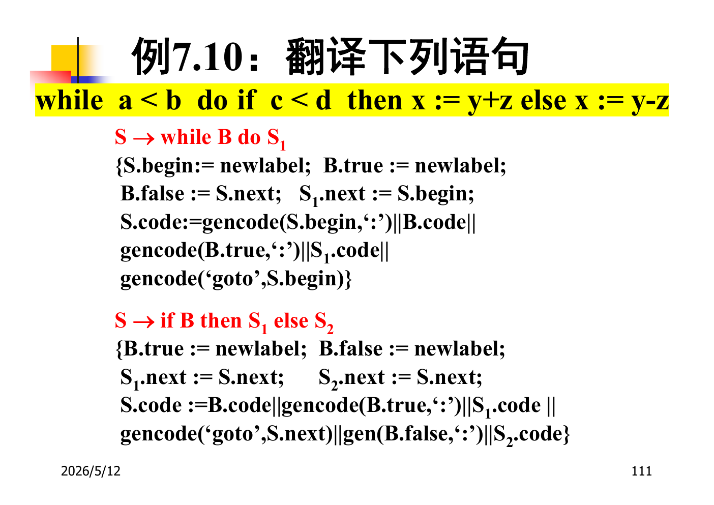
题：while a < b do if c < d then x := y+z else x := y-z
答案：
Lbegin:
if a < b goto Lif
goto Lnext
Lif:
if c < d goto Lthen
goto Lelse
Lthen:
t1 := y + z
x := t1
goto Lbegin
Lelse:
t2 := y - z
x := t2
goto Lbegin
Lnext:
解析：while 体执行完要跳回循环测试；if 的两个分支都在循环体内。
9. 过程调用
y := f(a, b+1)
答案：
t1 := b + 1
param a
param t1
t2 := call f, 2
y := t2
解析：param 个数和 call f, 2
的实参数一致；若调用约定要求逆序压参，param
顺序随约定调整。
10. 回填式翻译
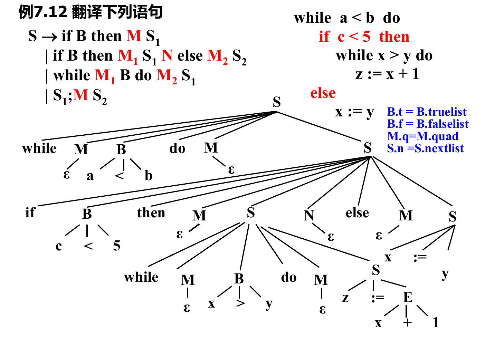
答案要点：
makelist(i)：创建只含跳转指令 i
的链。merge(p1,p2)：合并两条未定目标链。backpatch(p,i)：把链 p 中所有空目标填为
i。
解析：回填解决“一边扫描一边生成跳转代码时目标地址尚未知道”的问题。
11. switch 翻译
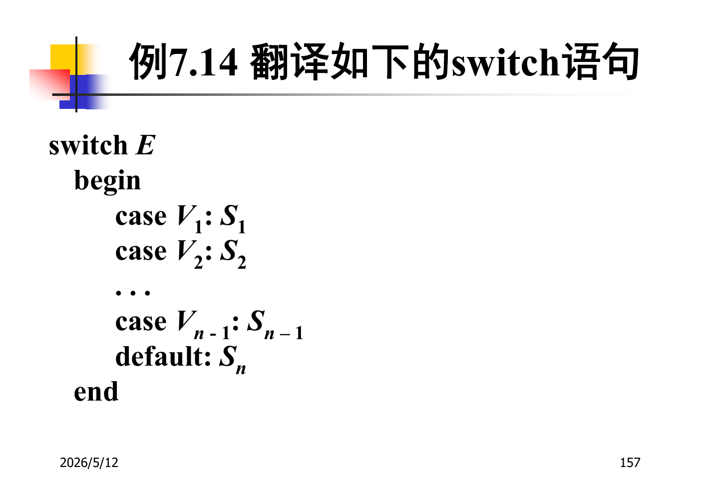
答案模板：
t := E
if t == V1 goto L1
if t == V2 goto L2
...
goto Ldefault
L1: S1; goto Lnext
L2: S2; goto Lnext
...
Ldefault: Sdefault
Lnext:
解析：case
可以翻译成顺序比较跳转，也可生成跳转表；考试通常写顺序比较即可。
第 8 章 符号表管理
1. 符号表存放什么
答案：至少存名字和属性。常见属性包括：
kind: 变量/函数/类型/常量/标号
type: 类型
width: 宽度
offset/address: 地址或相对地址
scope: 作用域层次
params: 参数信息
return_type: 返回类型
解析：符号表服务语义检查、中间代码生成和目标代码生成。
2. 名字字段组织
答案：
- 固定长度名字字段：查找简单，但浪费空间。
- 可变长度字段：节省空间，但表项管理复杂。
- 字符串表：符号表中只存指针/下标，兼顾空间和管理效率。
解析：实际编译器常把标识符字符序列放到统一字符串表。
3. 块结构符号表
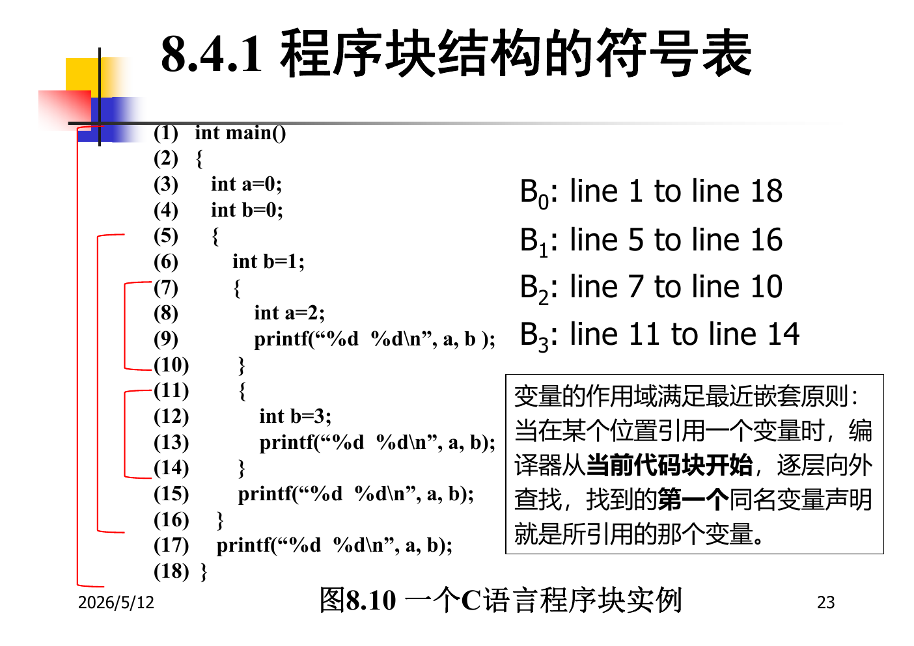
答案方法：
- 每进入一个块，建立新符号表。
- 当前块声明插入当前表。
- 查找名字时先查当前表，再沿外层链向外查。
- 当前块内同名通常报重复定义；内层块可遮蔽外层同名。
解析：符号表链反映词法嵌套作用域。
4. 线性表与散列表
答案：
- 线性表：插入简单，查找平均
O(n)。
- 散列表：查找平均接近
O(1)，但要处理冲突。
解析：编译器中名字查找频繁，散列表更常用。
5. 函数表项设计
答案示例：
name = f
kind = function
return_type = int
param_types = [int, real]
param_count = 2
entry = 代码入口地址
level = 作用域层次
解析：函数调用检查需要参数个数、参数类型、返回类型。
第 9 章 运行时存储组织
1. 静态作用域判断
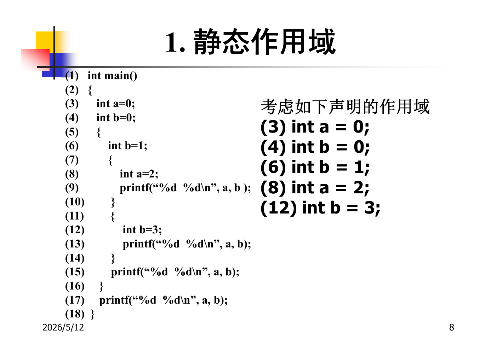
答案原则：
- 在当前块内引用名字，先找最近的声明。
- 内层同名声明遮蔽外层声明。
- 退出内层块后，内层声明不可见。
解析：静态作用域只看程序文本结构，不看运行时调用路径。
2. 访问链与控制链
题：P 中定义 Q，Q 中定义
R。当前在 R 中访问 P.x。
答案：沿访问链/静态链从 R 到 Q，再到
P，共两跳，然后按 x 的 offset 访问。
解析：控制链指向调用者，反映动态调用关系；访问链指向词法外层，反映静态嵌套关系。
3. 活动记录
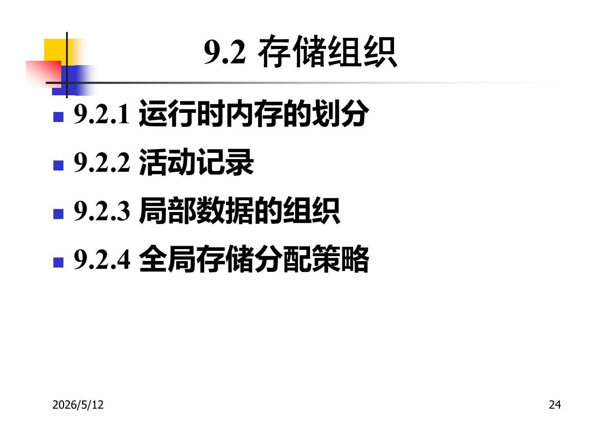
典型布局：
实参区
返回值位置
返回地址
动态链/控制链
静态链/访问链
保存寄存器
局部变量
临时变量
解析：一次过程调用对应一个活动记录；递归调用会产生多个活动记录。
4. 静态分配、栈分配、堆分配
答案：
| 分配方式 |
适用对象 |
特点 |
| 静态分配 |
全局变量、无递归语言的局部对象 |
编译期确定地址 |
| 栈式分配 |
普通过程调用的局部变量、临时变量 |
调用进入分配，返回释放 |
| 堆分配 |
动态对象、生命周期不服从栈顺序的数据 |
需要显式/自动回收 |
解析：关键看对象大小和生命周期能否在编译期或按调用栈确定。
5. 参数传递
答案：
- 传值：形参得到实参值副本，修改形参不影响实参。
- 传地址/引用：形参可通过地址修改实参。
- 传名：每次使用形参时重新按实参表达式求值，较少见。
解析：参数传递题常结合活动记录和调用序列考。
第 10 章 代码优化
1. 公共子表达式
答案示例：
t1 := a + b
t2 := a + b
x := t1 * t2
若两次之间 a、b 没变，可优化为：
t1 := a + b
x := t1 * t1
解析：公共子表达式成立的条件是表达式相同且操作数值未被改变。
2. 复制传播
答案：
f := g
x := f + 1
可变为：
f := g
x := g + 1
若 f 后面不再使用，f:=g 可进一步删除。
解析：复制传播本身不一定减少语句，但能制造死代码删除机会。
3. 基本块划分
题：
1 t1 := a + b
2 if t1 < c goto 5
3 d := t1 * 2
4 goto 6
5 d := t1 + 1
6 e := d
答案：
B1 = {1,2}
B2 = {3,4}
B3 = {5}
B4 = {6}
解析：入口语句是 1、跳转目标 5/6、跳转语句后继 3。
4. 基本块内公共子表达式优化
题：
t1 := a + b
t2 := a + b
t3 := t2 * c
d := t1
e := d * c
出口活跃变量只有 d 和 e。
答案：
t1 := a + b
d := t1
e := t1 * c
解析：t2 与 t1 等价；t3
出口不活跃，可以删除；d=t1 后 e=d*c 可用
t1*c。
5. 循环不变式外提
答案模板：
while (...) {
t := a * b // a,b 循环内不变
x := t + i
}
优化为：
t := a * b
while (...) {
x := t + i
}
解析：外提前必须确认该计算每次循环都会执行，且外提不会改变异常/副作用语义。
6. 强度削弱
答案示例：
2*x → x+x
x^2 → x*x
i*4 → i << 2 // 定点整数且机器支持时
解析：强度削弱用较便宜运算替代较昂贵运算，但必须保持语义等价。
第 11 章 代码生成
1. x := y + z 的目标代码
答案：
MOV y, R0
ADD z, R0
MOV R0, x
解析：朴素代码生成先装入一个操作数，再执行运算，最后存回结果。
2. a := b + c; d := a + e
的优化
答案：朴素代码可能是：
MOV b, R0
ADD c, R0
MOV R0, a
MOV a, R0
ADD e, R0
MOV R0, d
若 a 后续不需要存入内存，可优化为：
MOV b, R0
ADD c, R0
ADD e, R0
MOV R0, d
解析：MOV R0,a 和 MOV a,R0 是为了保存/再取
a，若语义上不需要保留 a，可删除。
3. 特殊指令
答案：
a := a + 1
若目标机支持，可生成：
INC a
解析：指令选择应利用目标机器提供的高效指令。
4. 窥孔优化
题：
MOV a, R0
MOV R0, b
MOV b, R0
ADD c, R0
MOV R0, d
答案：
MOV a, R0
MOV R0, b
ADD c, R0
MOV R0, d
解析：第二条后 R0 已经等于 b 的值，第三条
MOV b,R0 冗余。前提是中间没有标号、别名或副作用改变
b/R0。
5. 不可达代码消除
答案模板：
goto L1
x := 1 // 若无标号可跳入，删除
L1:
y := 2
优化为：
goto L1
L1:
y := 2
解析：无条件跳转后的无标号代码不会执行。
6. 寄存器分配与指派
答案：
- 寄存器分配：决定哪些变量/临时值放入寄存器。
- 寄存器指派：决定它们具体放入哪个寄存器。
解析：寄存器少时，要根据变量活跃性和使用频率决定谁留在寄存器，谁溢出到内存。
总题型答案模板
A. 文法构造
答案步骤：
- 写合法/非法样例。
- 找约束：开头、结尾、数量相等、嵌套、局部禁忌。
- 设计非终结符分工。
- 用样例推导检查是否多生成/漏生成。
B. 二义性证明
标准答案：
取句子 w = ...
存在最左推导 1: ...
存在最左推导 2: ...
两条最左推导不同，所以文法二义。
或画两棵不同语法树。
C. DFA/NFA
答案步骤：
- 正则式先 Thompson 构造 NFA。
- 子集法确定化。
- 终态/非终态初分组。
- 按输入转移目标组细分，直到稳定。
D. LL(1)
答案步骤：
消除左递归/提左因子
求 FIRST
求 FOLLOW
求 SELECT
检查同左部 SELECT 是否相交
构造预测分析表
E. LR 分析表
答案步骤：
增广文法
列项目
求 CLOSURE/GOTO
画项目集 DFA
填 ACTION/GOTO
检查冲突
F. 中间代码
答案步骤：
表达式：先按优先级生成临时变量。
布尔表达式：写真出口/假出口，注意短路。
控制结构：先画目标代码结构，再填标号。
数组：先算相对位移，再生成取数/赋值代码。
G. 运行时存储
答案步骤：
判断作用域规则
画活动记录
区分控制链和访问链
按静态层次差找非局部变量
说明调用序列/返回序列
H. 优化与代码生成
答案步骤：
划基本块
看变量是否活跃
合并公共子表达式
做复制/常量传播
删死代码
生成目标指令
做窥孔优化